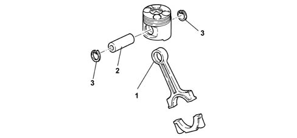
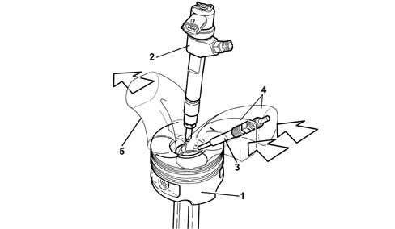

1028H pistons and connecting rods
- Path
- Descriptions > 10 ENGINE > 1028 PISTONS AND CONNECTING RODS > 1028H pistons and connecting rods
- Kind
- system description
- Applies to
- engines: 1.3 JTD 16v; all production periods
- Interactive page
- https://sloeber94.github.io/elrnDB-fPnd/en/#/2750902
Applies to: engines: 1.3 JTD 16v; all production periods
CONNECTING RODS
The connecting rods are made from hardened and tempered steel, with a copper bush (1) fitted for matching with the gudgeon pin (2).
The floating gudgeon pins are secured by two circlips (3) seated in specific grooves in the piston skirts.

Applies to: engines: 1.3 JTD 16v; all production periods
PISTONS
The light aluminium silicon alloy pistons with autothermic inserts are graded in three sizes.
The 'OMEGA' combustion chamber is located in the piston crown to improve combustion.
The gudgeon pin contains a duct through which the oil is sent to the jets, therefore ensuring improved piston cooling.
Two copper alloy bushes are used for attachment to the gudgeon pin.

1 - Piston 2 - Injector 3 - Heater plug 4 - Air inlet 5 - Exhaust gas outlet